来源：https://yawxxwt3iq1.feishu.cn/docx/PI56dLnpmok265xUpJtcxTTrnef
前段时间收到了鱼丸的消息，询问是否还在关注AI编程相关的内容，正好近期通过cursor完成了闲鱼自动化工具的开发，借此机会分享一下我做工具的玩法，跟大家学习交流。
先放一张思维导图解释一下工具的大致功能：
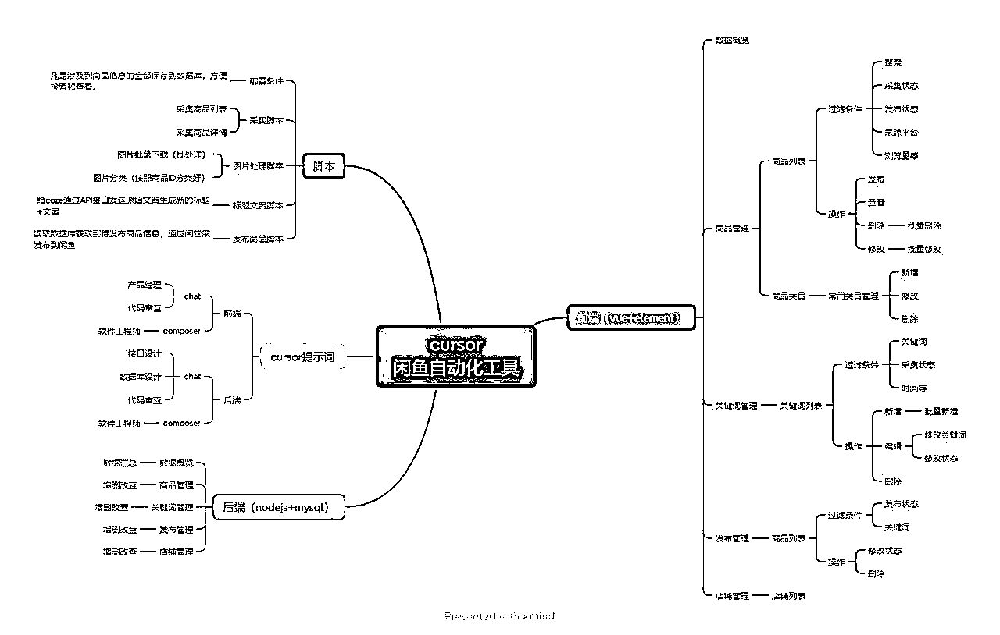
所有工具大概分为三个模块：
接下来我将按照模块划分来详细描述一下我是如何通过cursor来完成这三个模块的具体开发的。进入正题！
我们首先来看一下完整的脚本操作过程，我录制了两个视频，视频内容包含采集关键词、采集详情、上传等功能。由于上传是单独的脚本，所以关于上传请看第二个视频。
采集脚本演示：主要演示了自动采集状态为未采集的关键词，当关键词采集完成以后，自动采集未采集的商品详情。
主要演示脚本上传商品的功能：选择类目、上传图片、填写标题文案、设置sku等
由于脚本内容多，接下来关于脚本的样例我统一使用采集脚本来做演示，避免造成混乱。
如果是相对简单的脚本，那么无需使用chat，我认为composer足够完成简单脚本的开发。流程还是一样的，需要先明确需求、制定开发文档、完成代码编写。
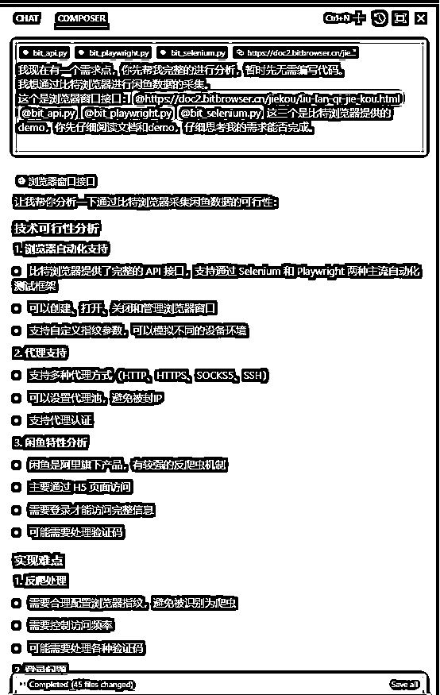
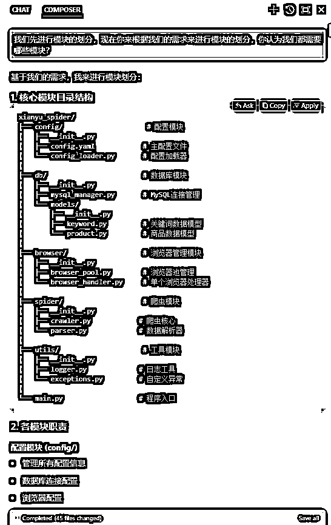
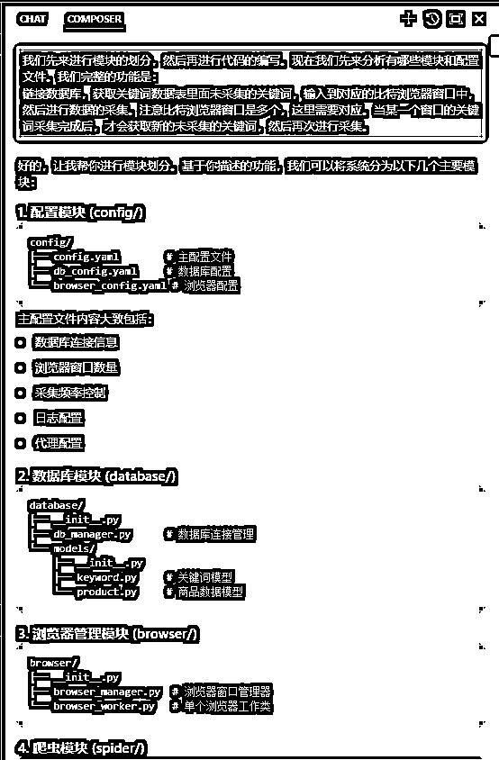
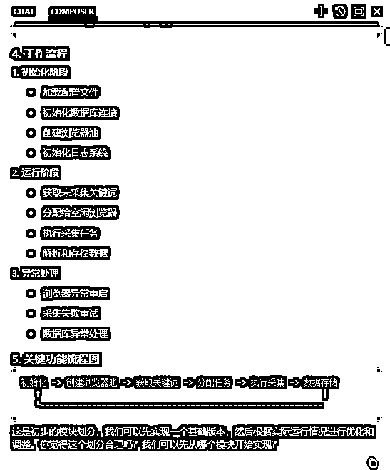
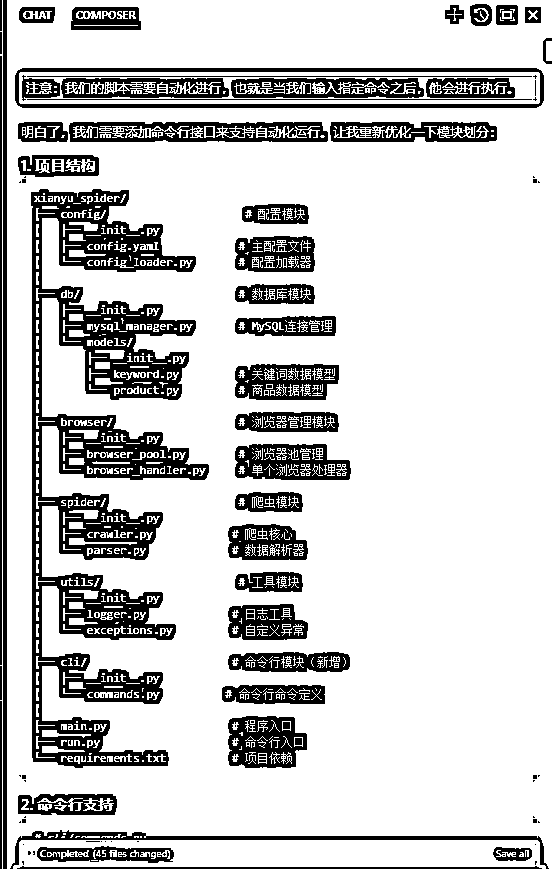
我的开发习惯遵从模块化开发。
模块化开发是一种软件开发方法，旨在将复杂的软件系统拆分成多个独立、可重用的模块，以提高开发效率、代码重用性、可维护性和可扩展性。
定义和基本属性
模块化开发通过将软件系统自顶向下逐层划分成若干个简单的模块，每个模块都拥有清晰的功能和接口，可以独立开发、测试和维护。这些模块通过定义好的接口相互协作，共同实现整个系统的功能。每个模块通常具有以下几种基本属性：
优势
我们在开发之前首先需要明确我们需要哪些数据，需要基于哪些数据做一些什么样的操作。数据库应该存储一些什么信息，哪些信息是重要的，哪些信息是次要的。由上面得出后端需要具备内的功能点有哪些。如果想实现从采集 -> 上传完整的步骤，那么后端所必须具备的东西有如下图片所示。
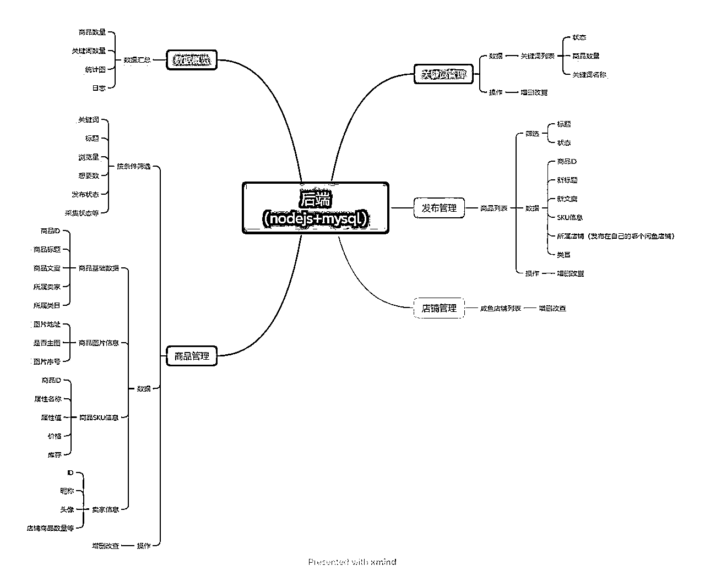
当我们的需求明确之后，可以给cursor分配角色（ Chat ⌈产品经理⌋、Chat ⌈ 代码审查 ⌋、Composer ⌈ 程序员 ⌋）我们就可以通过 cursor 来创建我们的应用。
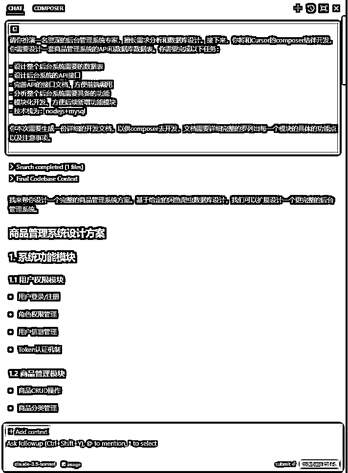
这是一份初始的开发文档。可以基于此文档继续进行完善。
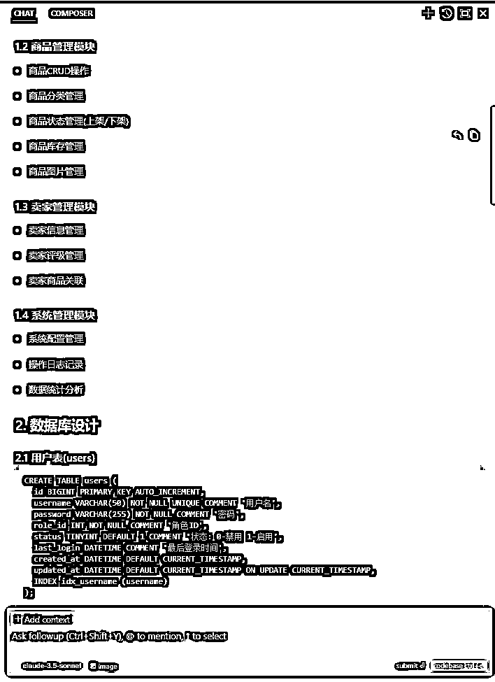
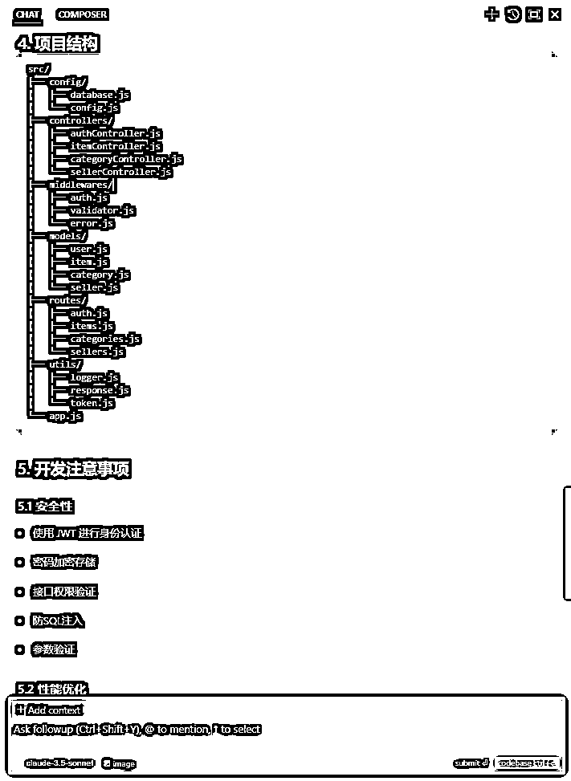
让cursor基于基础文档进行更新，我们可以在沟通的过程中，删除我们不需要的功能，比如一些过度的设计（库存预警、安全日志等）
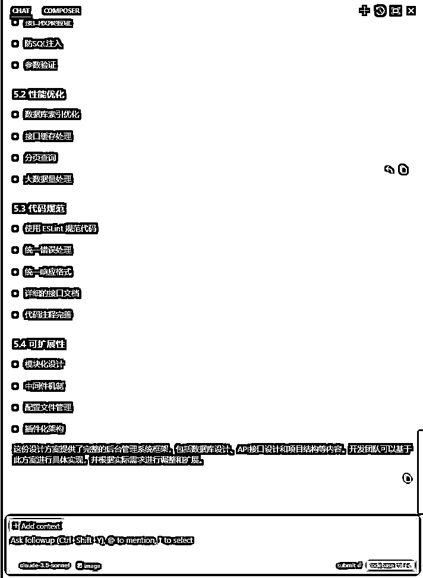
这是一份进行了基础修改的文档，我们可以根据自己的需求来完善和修改。
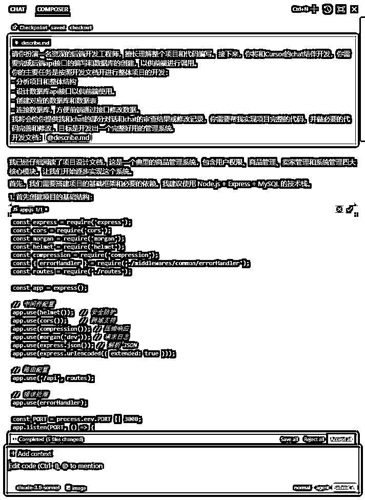
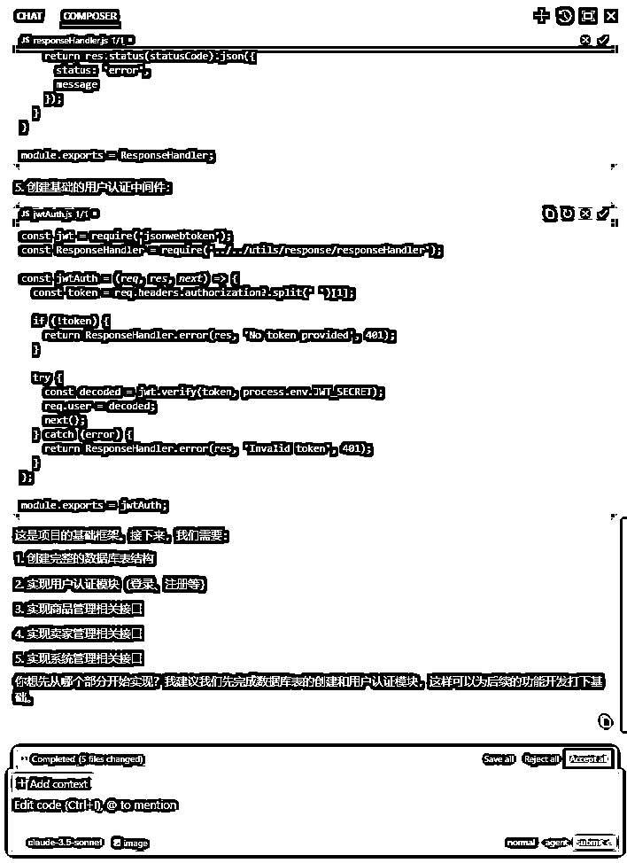
mysql> SHOW TABLES; +-------------------------+ | Tables_in_xianyu_manage | +-------------------------+ | t_keyword | | t_log_operation | | t_prod_category | | t_prod_image | | t_prod_info | | t_prod_keyword | | t_prod_operation_log | | t_prod_shop | | t_seller_info | | t_shop_info | | t_shop_item | | t_stat_daily | | t_sys_config | | t_sys_user | | t_task_collection | | t_task_execution | | v_shop_collect_stats | +-------------------------+ 19 rows in set (0.00 sec) mysql> SHOW COLUMNS FROM t_collect_log; +------------+----------+------+-----+-------------------+-------------------+ | Field | Type | Null | Key | Default | Extra | +------------+----------+------+-----+-------------------+-------------------+ | id | bigint | NO | PRI | NULL | auto_increment | | task_id | bigint | NO | MUL | NULL | | | log_type | tinyint | NO | | NULL | | | content | text | NO | | NULL | | | created_at | datetime | NO | | CURRENT_TIMESTAMP | DEFAULT_GENERATED | +------------+----------+------+-----+-------------------+-------------------+ 5 rows in set (0.00 sec) mysql> SHOW COLUMNS FROM t_keyword; +----------------+--------------+------+-----+-------------------+-----------------------------------------------+ | Field | Type | Null | Key | Default | Extra | +----------------+--------------+------+-----+-------------------+-----------------------------------------------+ | id | bigint | NO | PRI | NULL | auto_increment | | name | varchar(100) | NO | UNI | NULL | | | collect_status | tinyint | NO | MUL | 0 | | | collect_time | datetime | YES | MUL | NULL | | | created_at | datetime | NO | | CURRENT_TIMESTAMP | DEFAULT_GENERATED | | updated_at | datetime | NO | | CURRENT_TIMESTAMP | DEFAULT_GENERATED on update CURRENT_TIMESTAMP | +----------------+--------------+------+-----+-------------------+-----------------------------------------------+ 6 rows in set (0.00 sec) mysql> SHOW COLUMNS FROM t_prod_image; +------------+--------------+------+-----+-------------------+-------------------+ | Field | Type | Null | Key | Default | Extra | +------------+--------------+------+-----+-------------------+-------------------+ | id | bigint | NO | PRI | NULL | auto_increment | | product_id | bigint | NO | MUL | NULL | | | url | varchar(500) | NO | | NULL | | | sort | int | NO | | 0 | | | is_main | tinyint | NO | | 0 | | | status | tinyint | NO | MUL | 1 | | | file_size | int | YES | | NULL | | | dimensions | varchar(20) | YES | | NULL | | | created_at | datetime | NO | | CURRENT_TIMESTAMP | DEFAULT_GENERATED | +------------+--------------+------+-----+-------------------+-------------------+ 9 rows in set (0.00 sec) mysql> SHOW COLUMNS FROM t_prod_info; +-------------------+---------------+------+-----+-------------------+-----------------------------------------------+ | Field | Type | Null | Key | Default | Extra | +-------------------+---------------+------+-----+-------------------+-----------------------------------------------+ | id | bigint | NO | PRI | NULL | auto_increment | | name | varchar(255) | NO | | NULL | | | title | varchar(255) | NO | | NULL | | | code | varchar(50) | NO | MUL | NULL | | | category_id | bigint | NO | MUL | NULL | | | price | decimal(10,2) | NO | | 0.00 | | | stock | int | NO | | 0 | | | sales | int | NO | | 0 | | | status | tinyint | NO | MUL | 0 | | | source_url | varchar(500) | YES | | NULL | | | description | text | YES | | NULL | | | keywords | varchar(500) | YES | MUL | NULL | | | shop_id | bigint | NO | MUL | NULL | | | collect_time | datetime | YES | MUL | NULL | | | publish_time | datetime | YES | | NULL | | | rewrite_status | tinyint | NO | MUL | 0 | | | publish_status | tinyint | NO | MUL | 0 | | | created_at | datetime | NO | | CURRENT_TIMESTAMP | DEFAULT_GENERATED | | updated_at | datetime | NO | | CURRENT_TIMESTAMP | DEFAULT_GENERATED on update CURRENT_TIMESTAMP | | deleted_at | datetime | YES | | NULL | | | collect_status | tinyint | NO | MUL | 0 | | | collect_error | varchar(500) | YES | | NULL | | | collect_count | int | NO | | 0 | | | last_collect_time | datetime | YES | | NULL | | +-------------------+---------------+------+-----+-------------------+-----------------------------------------------+ 24 rows in set (0.00 sec) mysql> SHOW COLUMNS FROM t_seller_info; +------------------+--------------+------+-----+-------------------+-----------------------------------------------+ | Field | Type | Null | Key | Default | Extra | +------------------+--------------+------+-----+-------------------+-----------------------------------------------+ | id | bigint | NO | PRI | NULL | auto_increment | | shop_id | varchar(255) | NO | | NULL | | | seller_id | varchar(50) | NO | UNI | NULL | | | nickname | varchar(100) | YES | | NULL | | | rating | decimal(3,1) | YES | MUL | NULL | | | total_items | int | NO | | 0 | | | good_rating_rate | decimal(5,2) | YES | | NULL | | | status | tinyint | NO | MUL | 1 | | | last_active_time | datetime | YES | MUL | NULL | | | description | text | YES | | NULL | | | location | varchar(100) | YES | | NULL | | | created_at | datetime | NO | | CURRENT_TIMESTAMP | DEFAULT_GENERATED | | updated_at | datetime | NO | | CURRENT_TIMESTAMP | DEFAULT_GENERATED on update CURRENT_TIMESTAMP | | deleted_at | datetime | YES | | NULL | | +------------------+--------------+------+-----+-------------------+-----------------------------------------------+ 14 rows in set (0.00 sec) mysql> SHOW COLUMNS FROM t_shop_info; +--------------------+--------------+------+-----+-------------------+-----------------------------------------------+ | Field | Type | Null | Key | Default | Extra | +--------------------+--------------+------+-----+-------------------+-----------------------------------------------+ | id | bigint | NO | PRI | NULL | auto_increment | | name | varchar(100) | NO | | NULL | | | platform | varchar(50) | NO | MUL | NULL | | | shop_url | varchar(500) | YES | | NULL | | | status | tinyint | NO | MUL | 0 | | | rating | decimal(2,1) | YES | | 5.0 | | | created_at | datetime | NO | | CURRENT_TIMESTAMP | DEFAULT_GENERATED | | updated_at | datetime | NO | | CURRENT_TIMESTAMP | DEFAULT_GENERATED on update CURRENT_TIMESTAMP | | total_products | int | NO | | 0 | | | collected_products | int | NO | | 0 | | | last_collect_time | datetime | YES | | NULL | | | collect_status | tinyint | NO | MUL | 0 | | +--------------------+--------------+------+-----+-------------------+-----------------------------------------------+ 12 rows in set (0.00 sec) mysql> SHOW COLUMNS FROM t_sys_config; +--------------+--------------+------+-----+-------------------+-----------------------------------------------+ | Field | Type | Null | Key | Default | Extra | +--------------+--------------+------+-----+-------------------+-----------------------------------------------+ | id | bigint | NO | PRI | NULL | auto_increment | | config_key | varchar(50) | NO | UNI | NULL | | | config_value | text | YES | | NULL | | | description | varchar(200) | YES | | NULL | | | created_at | datetime | NO | | CURRENT_TIMESTAMP | DEFAULT_GENERATED | | updated_at | datetime | NO | | CURRENT_TIMESTAMP | DEFAULT_GENERATED on update CURRENT_TIMESTAMP | +--------------+------------- mysql> SHOW COLUMNS FROM t_shop_item; +-------------------+---------------+------+-----+-------------------+-----------------------------------------------+ | Field | Type | Null | Key | Default | Extra | +-------------------+---------------+------+-----+-------------------+-----------------------------------------------+ | id | bigint | NO | PRI | NULL | auto_increment | | seller_id | bigint | NO | MUL | NULL | | | item_id | bigint | NO | MUL | NULL | | | item_price | decimal(10,2) | YES | | NULL | | | item_image | varchar(500) | YES | | NULL | | | collect_status | tinyint | NO | MUL | 0 | | | collect_count | int | NO | | 0 | | | last_collect_time | datetime | YES | | NULL | | | created_at | datetime | NO | | CURRENT_TIMESTAMP | DEFAULT_GENERATED | | updated_at | datetime | NO | | CURRENT_TIMESTAMP | DEFAULT_GENERATED on update CURRENT_TIMESTAMP | +-------------------+---------------+------+-----+-------------------+-----------------------------------------------+ 10 rows in set (0.00 sec) mysql> SHOW COLUMNS FROM cookies; ERROR 2013 (HY000): Lost connection to MySQL server during query No connection. Trying to reconnect... Connection id: 117 Current database: xianyu_manage +---------------+--------------+------+-----+-------------------+-----------------------------------------------+ | Field | Type | Null | Key | Default | Extra | +---------------+--------------+------+-----+-------------------+-----------------------------------------------+ | id | int | NO | PRI | NULL | auto_increment | | cookie | text | NO | | NULL | | | token | varchar(255) | NO | | NULL | | | create_time | datetime | YES | | CURRENT_TIMESTAMP | DEFAULT_GENERATED | | update_time | datetime | YES | | CURRENT_TIMESTAMP | DEFAULT_GENERATED on update CURRENT_TIMESTAMP | | last_use | datetime | YES | | NULL | | | is_valid | tinyint(1) | YES | | 1 | | | fail_count | int | YES | | 0 | | | success_count | int | YES | | 0 | | +---------------+--------------+------+-----+-------------------+-----------------------------------------------+ 9 rows in set (0.01 sec) mysql> SHOW COLUMNS FROM proxies; +---------------+--------------+------+-----+-------------------+-----------------------------------------------+ | Field | Type | Null | Key | Default | Extra | +---------------+--------------+------+-----+-------------------+-----------------------------------------------+ | id | int | NO | PRI | NULL | auto_increment | | ip | varchar(255) | NO | | NULL | | | port | int | NO | | NULL | | | protocol | varchar(10) | YES | | http | | | is_valid | tinyint(1) | YES | | 1 | | | create_time | datetime | YES | | CURRENT_TIMESTAMP | DEFAULT_GENERATED | | update_time | datetime | YES | | CURRENT_TIMESTAMP | DEFAULT_GENERATED on update CURRENT_TIMESTAMP | | last_use | datetime | YES | | NULL | | | fail_count | int | YES | | 0 | | | success_count | int | YES | | 0 | | +---------------+--------------+------+-----+-------------------+-----------------------------------------------+ 10 rows in set (0.00 sec)
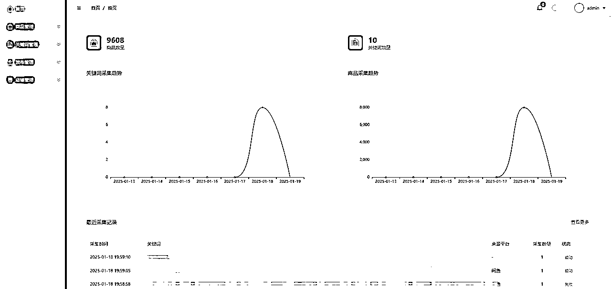
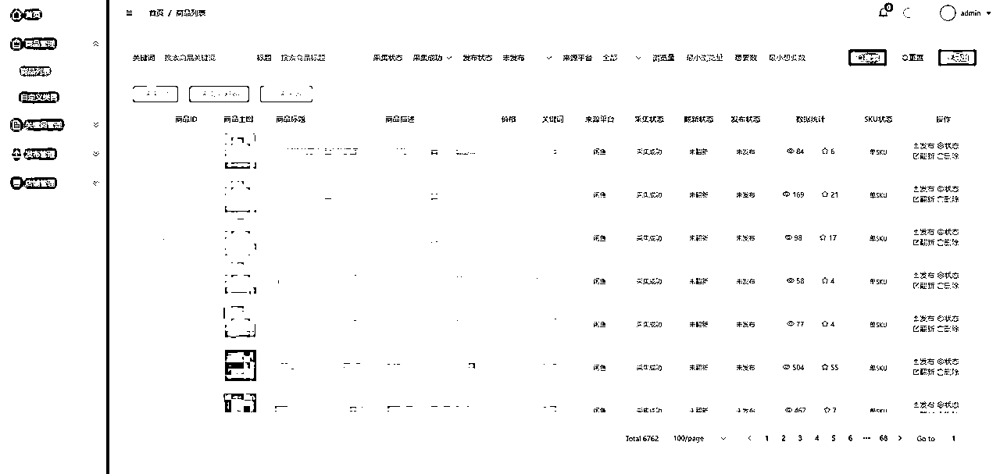
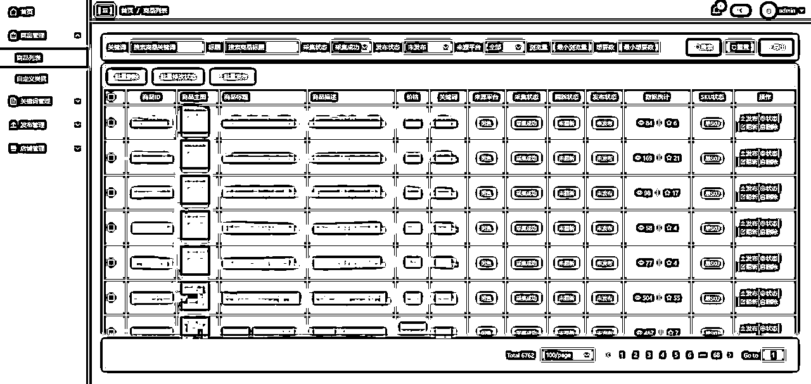
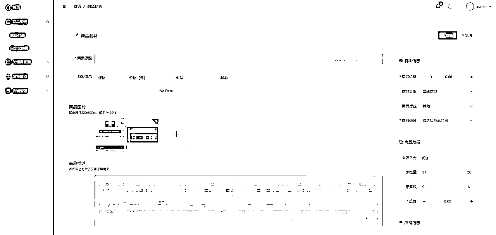
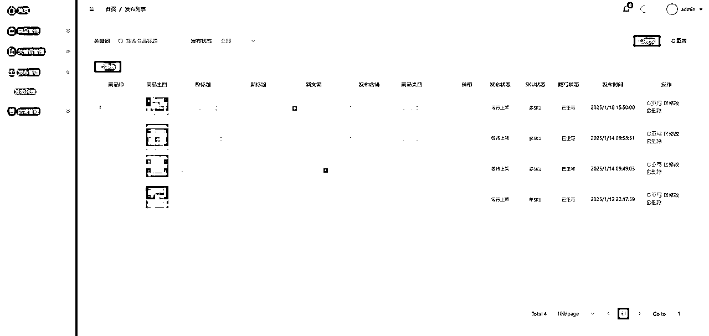
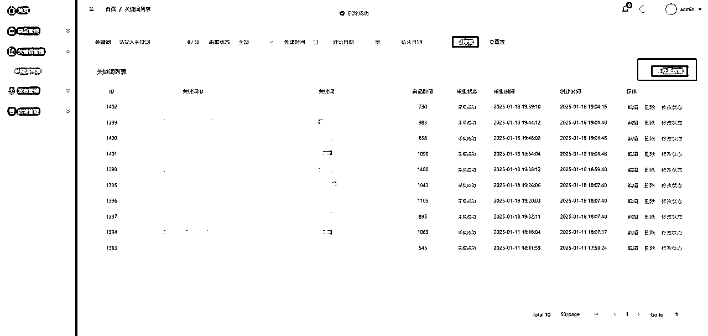
点击批量新增
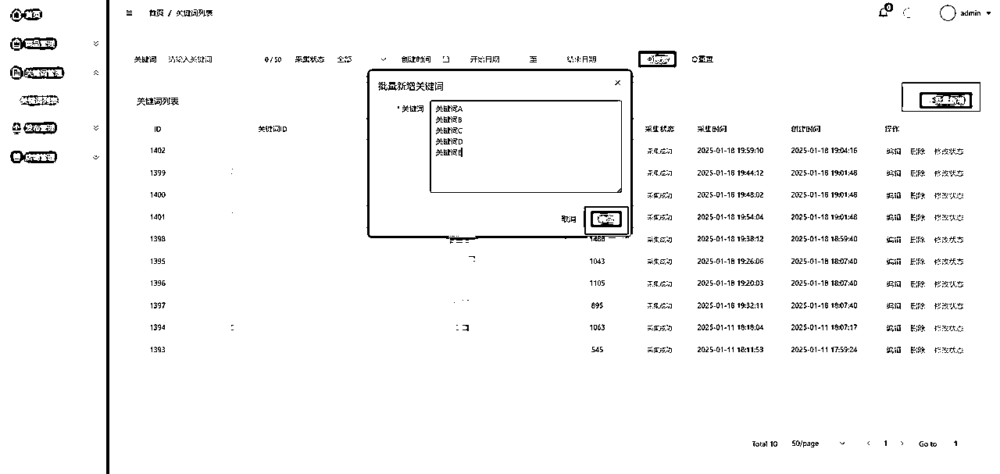
批量新增
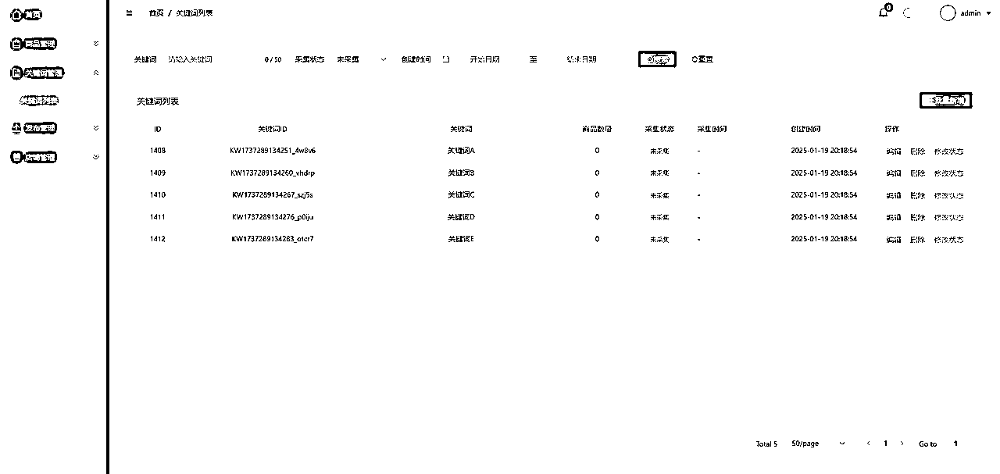
新增成功
这里在优化商品列表页
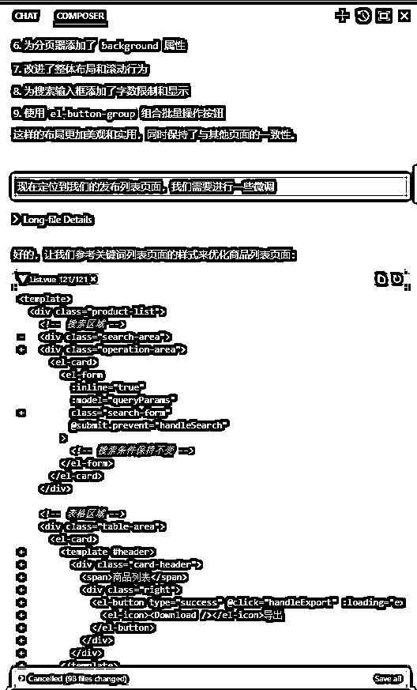
这里定位到发布列表页，修改出错了
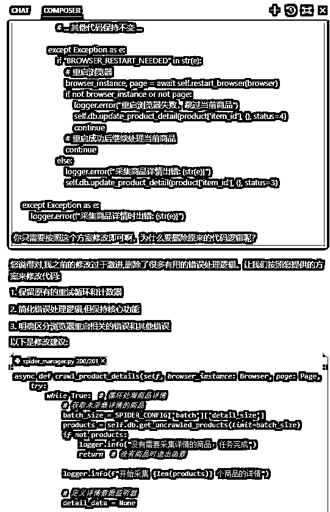
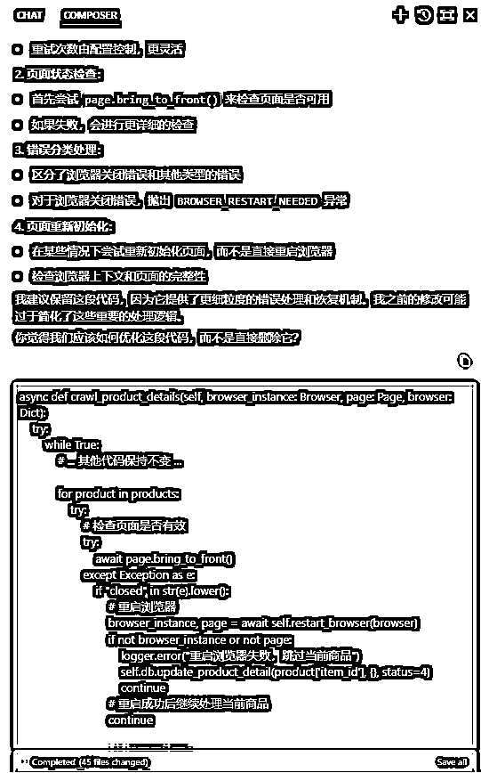
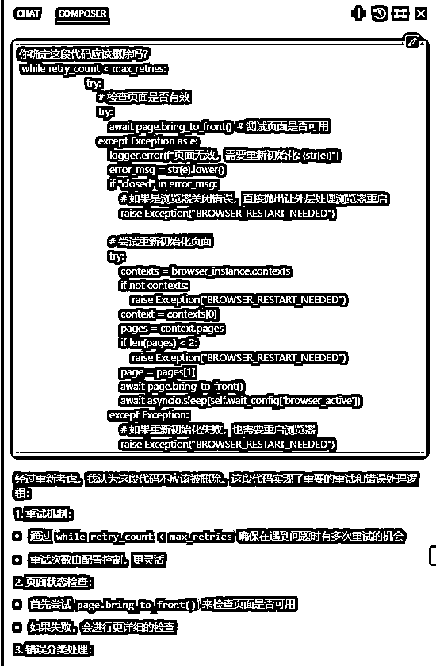
cursor基础配置，请参考如下文档：
生财cursor航海对于cursor的配置和基础开发已经写的很完善了。cursor航海手册
生财圈友的文章：怎样通过Cursor编写复杂产品及AI协作编程
关于AI应用的文章生财里面有很多，都是优秀的分享，想了解更多关于cursor可看生财AI应用模块里面的分享。
如果有收获帮忙原文点个赞吧，感谢你的慷慨~